| 日付 | 2016年1月31日（日） |
|---|---|
| メンバー | 家族（妻、長女・4歳、長男・2歳） |
| アクセス | 車 |
本日は中途半端な空模様。
山に行くほど良い天気ではないが、どこにも出かけないのはもったいない。
いろいろ調べてみて、相模原麻溝公園に目を付ける。
家から少し離れているが、フィールドアスレチックで遊べる公園で
利用料、駐車場とも無料の素晴らしい施設だ。
駐車場に車を停めて早速遊び始める。
最初はネットのトンネルを潜る遊具。
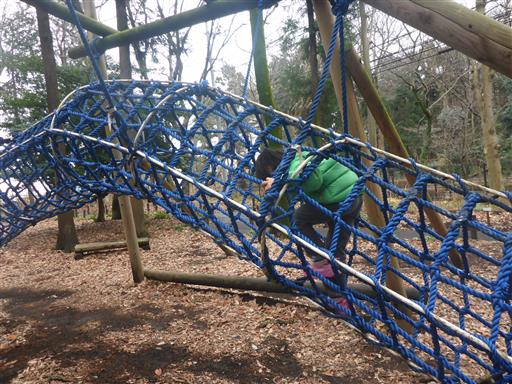
息子ができる遊具は少ない。頑張ってネットを登っている。
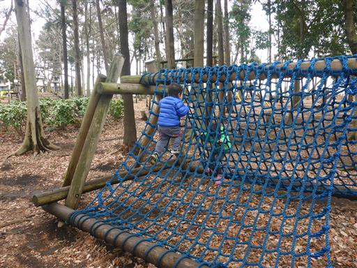
朝早いからか辺りは閑散としている。
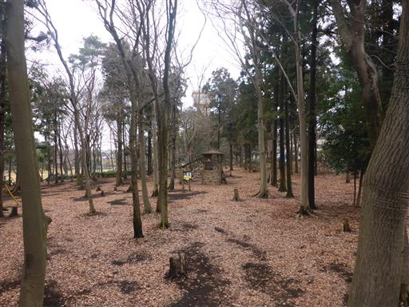
複雑な形の丸太とロープ。結構難しい。
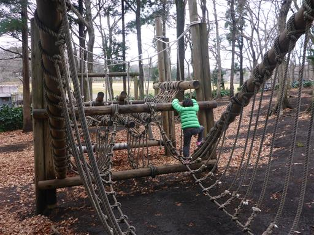
丸い穴を潜って中に入る。穴が小さいため、 大人は結構苦しい。
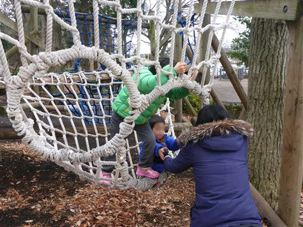
丸太の上を歩く。大人にとっては非常に簡単。
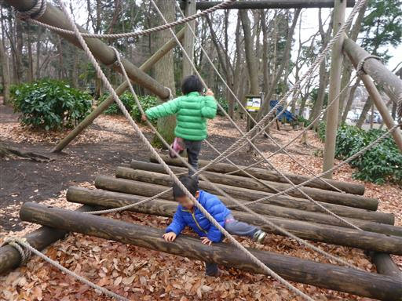
ロープでできた橋を渡る。そこそこ高度感があり楽しい。
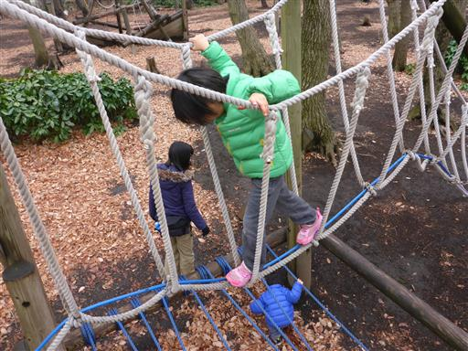
途中で係員から、木が濡れていて滑りやすいため利用禁止と指摘される。
裏から入ったため気づかなかったが、入口にはそのような表示が出ていた。
通りで人がいないわけだ。仕方がないので、遊具のある広場に移動する。
息子は走って行く姉を追いかけて頑張って階段を下りている。

大小2つのコンビネーション遊具がある。
こちらは子供達で賑わっている。
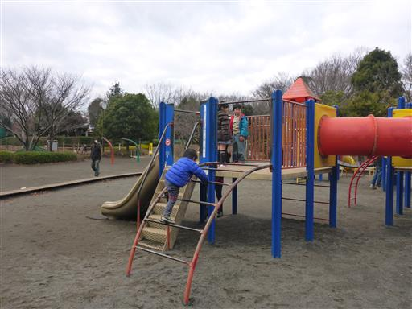
謎のぶら下がり（？）遊具。体重をかけるとぐねっと曲がる。
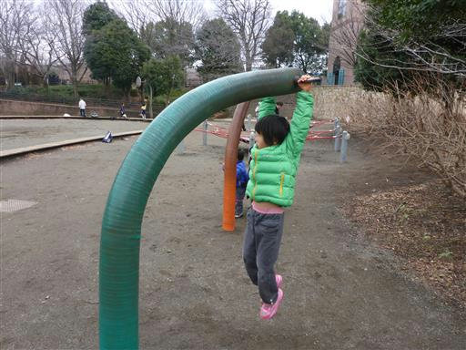
跳ねないトランポリン。
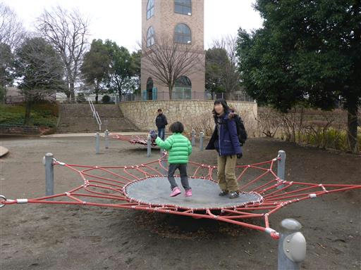
ネットツリー。アスレチック以外にも遊具はそこそこ充実している。
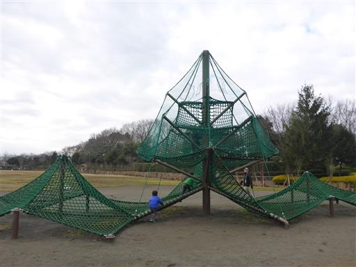
娘はするする上に登って行く。あまり高くはないネットツリーだ。
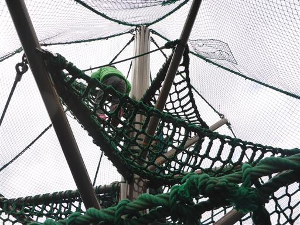
息子は登るのに苦戦している。補助してあげて、ようやく上までたどり着く。
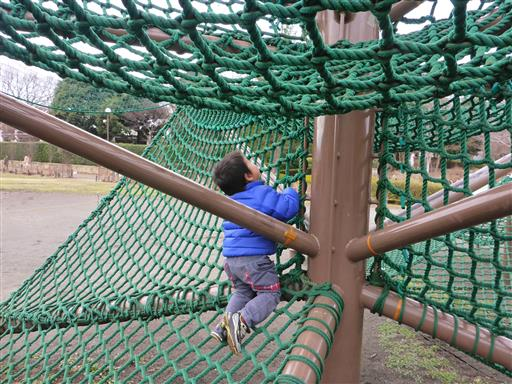
息子が退屈してきたため、ふれあい動物広場に移動する。
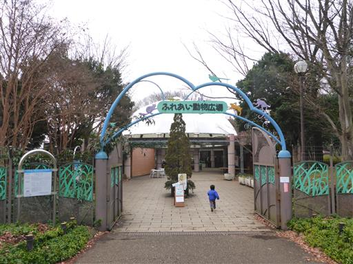
展示されている動物たちを見て回る。
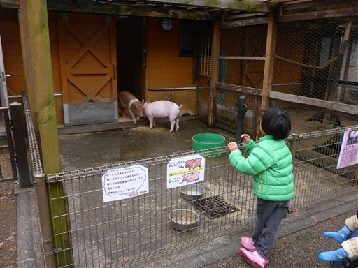
ポニーの乗馬体験。100円と安いため、利用してみる。
息子は少し怖がっていた。
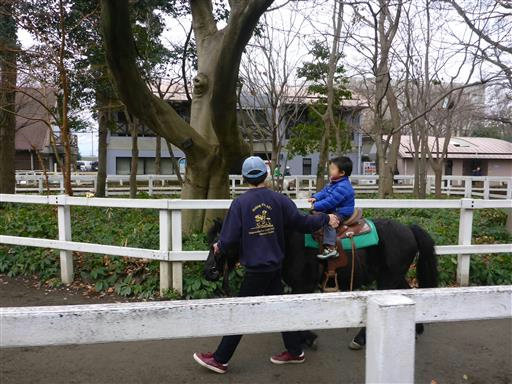
一角に動物との触れ合いコーナーがある。モルモットを貸してもらえる。
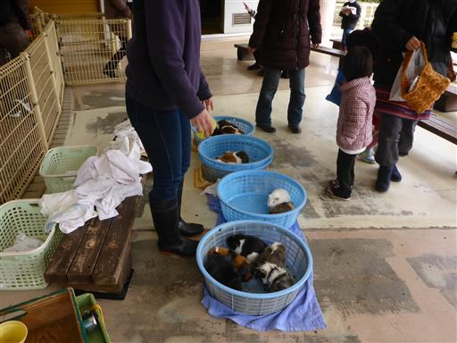
モルモットを膝の上に抱っこして、ニンジンを食べさせる。
息子は何も教えていないのに、ニンジンの端を手に取って、もう一方の端をモルモットの口に差し出している。
何でやり方を知っているのだろう？
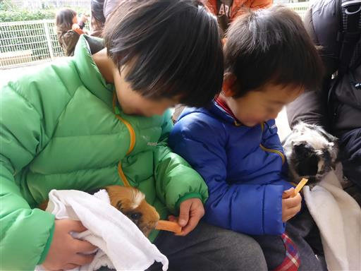
良く手を洗ったら、展示されている馬車によじ登って遊ぶ。
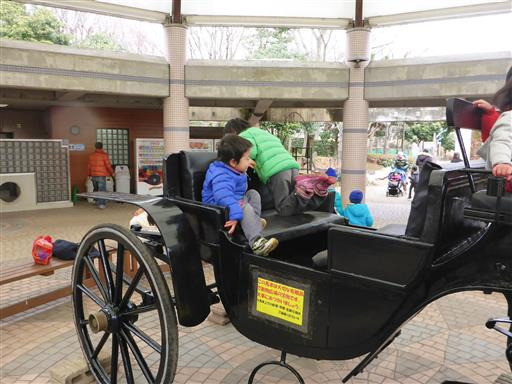
ベンチで昼食を取り、昼食後は辺りをぶらぶらする。
色とりどりの花がきれいに咲いている。
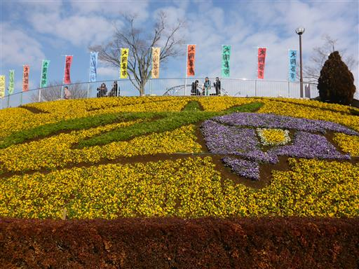
陶器市をやっていたので見学する。
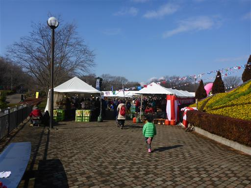
食器が所狭しと並んでいる。
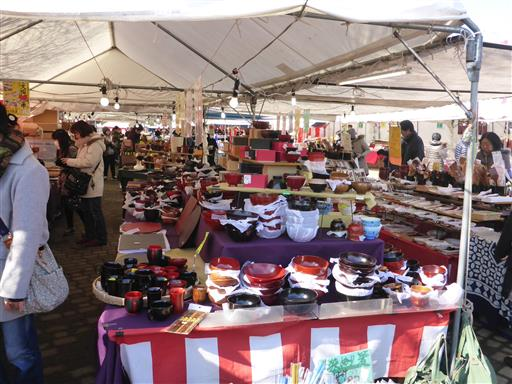
子供たちはすぐに手を出すので怖い。ここで箸を購入。
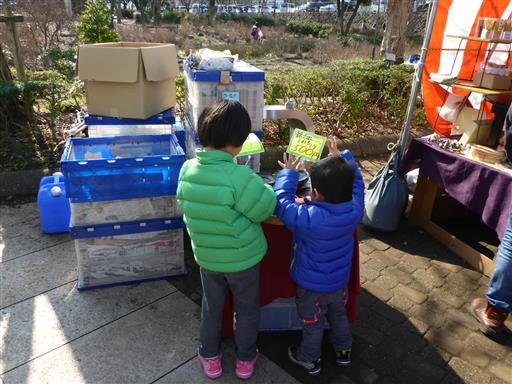
公園内で一番よく目立つ展望塔に登ってみる。
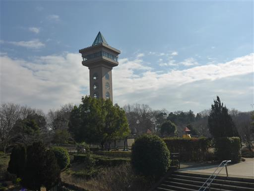
高さ38mで眺めがよい。丹沢が見えるはずだが、天気が良くないため今日は見えない。
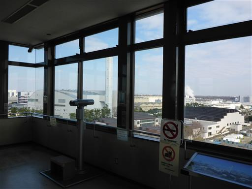
眼下に先ほど遊んだ公園が見える。
上から見下ろすと、遊んだ公園が足の形をしていたことに気付く。
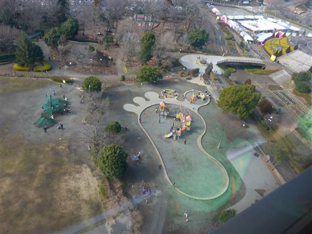
木が乾いてアスレチックが利用可になったため、再びアスレチック場へ行く。
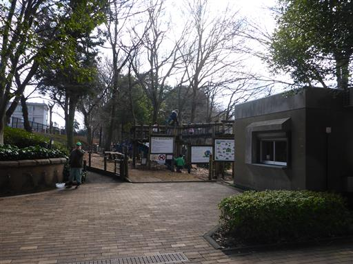
一番最初にあるのは大型の遊具。
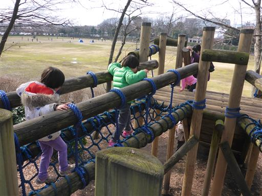
ネットでできた長いトンネル。娘が付いて来てと言うので中に入ったが狭くてきつい。
前を進んでいた子がゆっくりペースで人の流れが滞ったため、
なかなか脱出できず手足首が痛くなってしまった。
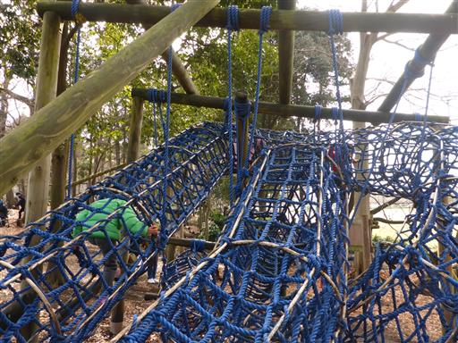
丸太の橋。揺れるが高度感はない。
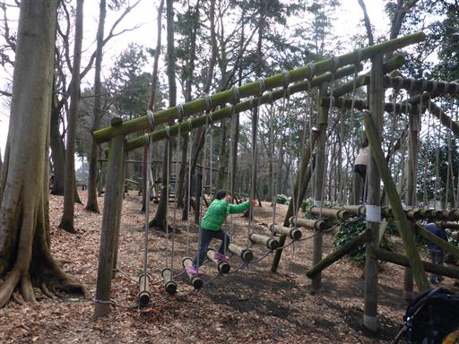
丸太渡り。高度感もあり、この公園内では一番難しかった。
ここのアスレチックは案内に小学生向きと書かれていたが、さほど難しいものはなく、
娘にとってちょうど良い位の難易度だった。
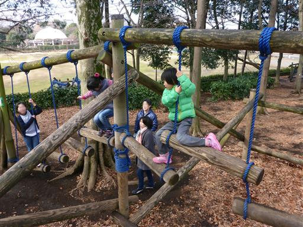
最後にロープウェイで遊ぶ。こちらは人気があって順番待ち。
丸い球の上に座れるため、息子でも楽々できる。
アスレチック、遊具、動物園など充実した施設が揃った良い公園だった。
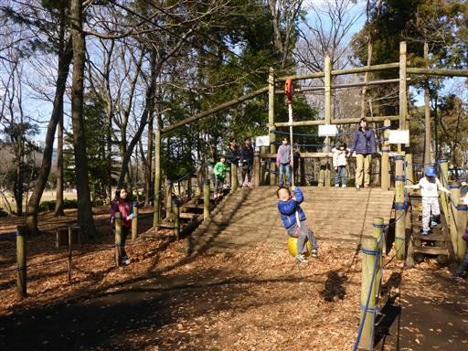